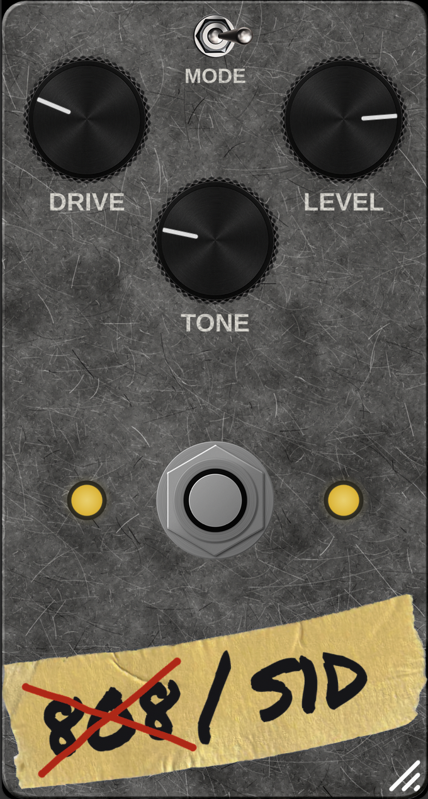

AmpPusher
Two neural overdrives for pushing your amp!
AmpPusher is a personal machine-learning project in C++/JUCE and Python (PyTorch), built while learning the basics. It has two neural overdrive units based on the classic green and yellow pedals, running in real time inside a plugin.


Main Features
Neural Overdrive
- Each unit is a small GRU network trained in PyTorch and conditioned on Drive and Tone. It runs in real time in C++ through RTNeural. Output level follows a measured gain curve, not a learned one.
Controls
- Drive, Tone and Level knobs, a Mode switch for the green or yellow unit, and a bypass footswitch.
Same Sound at Any Sample Rate
- The networks always run at 48 kHz, the rate they were trained at. At other session rates the plugin resamples around them and reports the added latency to the host for compensation.
Extra Features
- Click-free bypass: crossfades to a latency-matched dry signal and stops the networks while bypassed
- Click-free switching between the two units
- Resizable Interface: four sizes, with a savable default
- Accuracy: 24 to 31 dB null depth against the source emulation on held-out audio
- Parity test: a C++ test checks that the plugin matches the PyTorch model